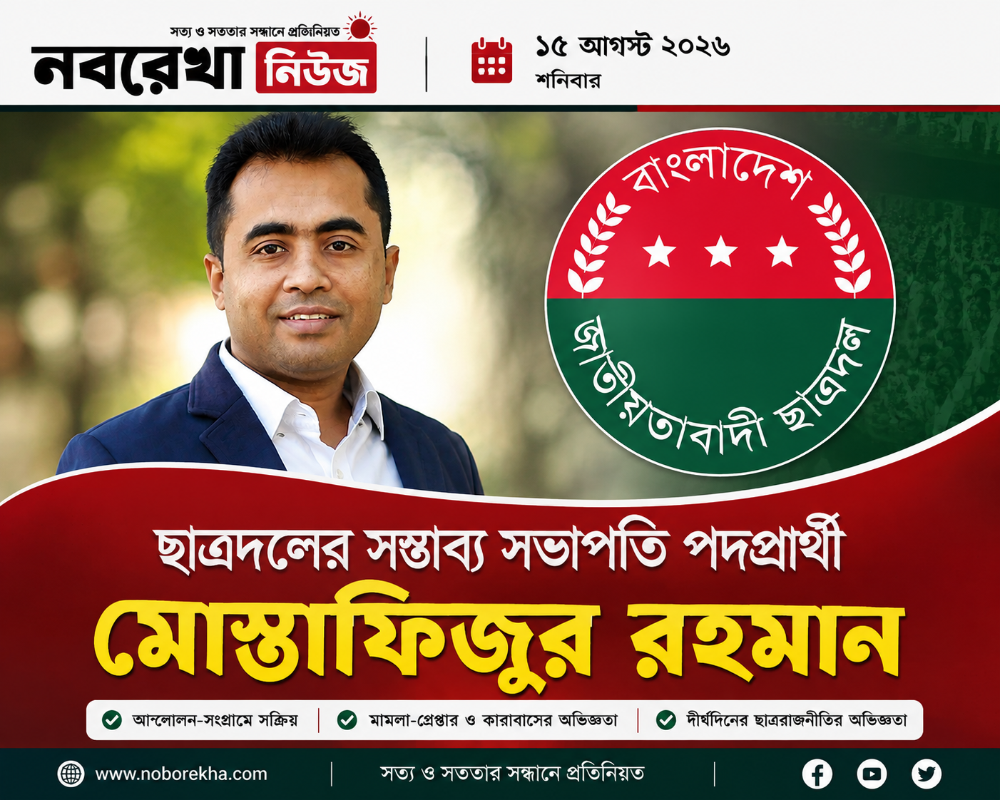

বাংলাদেশ জাতীয়তাবাদী ছাত্রদলের কেন্দ্রীয় কমিটি পুনর্গঠনকে ঘিরে সংগঠনটির রাজনীতিতে নতুন করে আলোচনা শুরু হয়েছে। সম্ভাব্য নতুন নেতৃত্বের তালিকায় বর্তমান কেন্দ্রীয় সংসদের যুগ্ম সাধারণ সম্পাদক মোস্তাফিজুর রহমানের নামও আলোচনায় রয়েছে।
ডাকসু নির্বাচনে ছাত্রদলের ভিপি প্রার্থী
২০১৯ সালের ঢাকা বিশ্ববিদ্যালয় কেন্দ্রীয় ছাত্র সংসদ (ডাকসু) নির্বাচনে ছাত্রদলের প্যানেল থেকে সহসভাপতি (ভিপি) পদে প্রতিদ্বন্দ্বিতা করেন মোস্তাফিজুর রহমান। ওই নির্বাচনকে ঘিরে ঢাকা বিশ্ববিদ্যালয় ক্যাম্পাসে ব্যাপক রাজনৈতিক আলোচনা ও বিতর্ক তৈরি হয়েছিল।
মামলা ও কারাবাসের অভিজ্ঞতা
মোস্তাফিজুর রহমানের রাজনৈতিক জীবনে মামলা ও কারাবাসও গুরুত্বপূর্ণ অধ্যায় হয়ে রয়েছে। তাঁর রাজনৈতিক জীবনের বিভিন্ন সময়ে একাধিক মামলা হয়েছে এবং এসব মামলায় তাঁকে গ্রেপ্তার ও কারাবন্দিত্বের মুখোমুখি হতে হয়েছে।
১৭টি মামলা, একাধিকবার গ্রেপ্তার এবং প্রায় ছয় মাস কারাভোগের তথ্য তাঁর রাজনৈতিক জীবনের বিভিন্ন পর্যায় নিয়ে প্রকাশিত প্রতিবেদনে উঠে এসেছে।
আন্দোলন-সংগ্রামে সক্রিয় ভূমিকা
ছাত্রদলের নেতাকর্মীদের কাছে মোস্তাফিজুর রহমানের অন্যতম পরিচয় আন্দোলন-সংগ্রামে সক্রিয় একজন নেতা হিসেবে। বিভিন্ন রাজনৈতিক কর্মসূচি ও সংগঠনের কার্যক্রমে তাঁর অংশগ্রহণ তাঁকে সংগঠনের মাঠপর্যায়ের রাজনীতিতে পরিচিত করে তুলেছে।
কেন আলোচনায় মোস্তাফিজুর রহমান?
ছাত্রদলের নতুন কমিটি গঠনের ক্ষেত্রে আন্দোলন-সংগ্রামে সক্রিয় এবং সংগঠনের কঠিন সময়ে মাঠে থাকা নেতাদের গুরুত্ব দেওয়ার বিষয়টি আলোচনায় রয়েছে। এ কারণে বর্তমান কেন্দ্রীয় সংসদের যুগ্ম সাধারণ সম্পাদক মোস্তাফিজুর রহমানকে সম্ভাব্য নেতৃত্বের তালিকায় রাখা হচ্ছে।
ছাত্রদলের নতুন নেতৃত্ব নিয়ে আলোচনা
সংগঠনের নতুন নেতৃত্ব নির্বাচনের ক্ষেত্রে রাজনৈতিক অভিজ্ঞতার পাশাপাশি সাংগঠনিক দক্ষতা, নেতাকর্মীদের সঙ্গে সমন্বয় এবং সাধারণ শিক্ষার্থীদের সঙ্গে যোগাযোগের বিষয়টিও গুরুত্বপূর্ণ হয়ে উঠতে পারে।
চূড়ান্ত সিদ্ধান্ত বিএনপির হাইকমান্ডের
ছাত্রদলের নতুন কমিটি নিয়ে আলোচনা চললেও নেতৃত্বের চূড়ান্ত সিদ্ধান্ত এখনো হয়নি। সভাপতি ও সাধারণ সম্পাদকসহ গুরুত্বপূর্ণ পদে কারা দায়িত্ব পাবেন, সেটি দলীয় সিদ্ধান্তের মাধ্যমেই নির্ধারিত হবে।
ফলে সম্ভাব্য প্রার্থীদের নাম নিয়ে আলোচনা থাকলেও চূড়ান্ত কমিটি ঘোষণা না হওয়া পর্যন্ত কারও পদ নিশ্চিত বলা যাচ্ছে না।
সামনে কী?
ছাত্রদলের নতুন নেতৃত্ব নিয়ে সংগঠনের ভেতরে ও রাজনৈতিক অঙ্গনে আলোচনা ক্রমেই বাড়ছে। সম্ভাব্য প্রার্থীদের মধ্যে মোস্তাফিজুর রহমানের নামও আলোচনায় রয়েছে।
দীর্ঘদিনের রাজনৈতিক অভিজ্ঞতা, আন্দোলন-সংগ্রামে সক্রিয়তা এবং সংগঠনের কেন্দ্রীয় পর্যায়ে দায়িত্ব পালনের অভিজ্ঞতা তাঁর সম্ভাবনাকে আলোচনায় এনেছে। তবে শেষ পর্যন্ত নতুন কমিটিতে তিনি কোন দায়িত্ব পাচ্ছেন, সেটি নির্ভর করবে দলীয় চূড়ান্ত সিদ্ধান্তের ওপর।